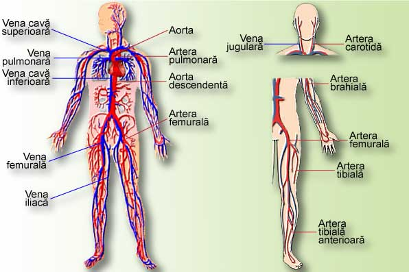

-
SISTEMUL CIRCULATOR  Corpul uman este alcătuit dintr-o vastă reţea de canale, mai mici sau mai mari, prin care circulă permanent lichide cu diverse încărcături. Sistemul circulator reprezintă o imensă reţea de distribuţie, redistribuţie, evacuare şi recaptare a fluidelor din corp, având o importanţă covârşitoare pentru organism.
-
Multitudinea de vase tubulare ale sistemului circulator, prin intermediul cărora circulă sângele, reuşeşte să irige permanent întreg organismul, fără să fie omis nici un ungher, nici măcar o celulă, din zecile de miliarde care alcătuiesc corpul uman